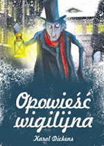

Wraz z początkiem zimy pojawia się coraz więcej myśli na temat nadchodzących Świąt Bożego Narodzenia. Wystawy sklepowe już od wielu tygodni upewniają się, że dotrą do nas informacje o niezwykłych, przygotowanych na ten czas okazjach, rodzice martwią się o prezenty dla swoich dzieci, a te wyczekują już wolnego od szkoły czasu i rozkoszują się myślą o wypatrywaniu symbolicznej, pierwszej gwiazdki na niebie…
Są też jednak trudniejsze aspekty nadchodzących świąt. Tajemnicą poliszynela jest bowiem fakt pogarszania się stanu wielu pacjentów przed świętami, narastania konfliktów w rodzinach, niepokoju w związku z wymuszaną tradycją, nie zawsze upragnioną bliskością z innymi… Ta rzeczywistość dotyczy wielu osób, dla których pierwszy scenariusz – odpoczynku, radosnych zakupów i podniosłego przeżycia duchowego niknie w mroku wewnętrznych i rodzinnych konfliktów…
Charles Dickens na bohatera swojej opowieści wybrał człowieka, o którym trudno powiedzieć, aby jeszcze miał konflikty lub rozterki. Scrooge, tak bowiem nazywa się tytułowy bohater, w wyniku różnych doświadczeń życiowych zanegował w ogóle sens świętowania Bożego Narodzenia. Można o Scrooge’u pomyśleć jako o XIX wiecznym biznesmenie, dla którego radość, bliskość i szczodrość to pojęcia nawet nie tyle obce, co wrogie ideowo. Prezentacja postaci rozpoczyna się od słów:
Twardy i ostry, jak krzemień, był przytem milczący i zamknięty w sobie. Lodowaty chłód serca skurczył mu oblicze, ścisnął spiczasty nos, pomarszczył czoło, zapalił oczy zimnym blaskiem stali, zacisnął mocno wązkie, sine usta Sztywna postawa, głos suchy i skrzypiący, białawy szron na głowie, brwi i podbródek spiczasty, czyniły go podobnym do ostrego gwoździa. Wszędzie wnosił z sobą lodowatą atmosferę, studził swą obecnością nawet kantor podczas upałów.Takiego go poznajemy. To, co dzieje się później, można bez większej przesady nazwać terapią w trzech aktach. Scroog’a odwiedzają trzy potężne duchy i pozwalają mu lepiej poznać własną przeszłość i wybory, które doprowadziły go do samotności i obecnego stanu umysłu. Ukazują mu też w całości realność, w której się znalazł i kreślą przerażający obraz przyszłych dni…
Upał i zimno zresztą nie wywierało nań żadnego wpływu. Gorąco letnie nie grzało go, mrozy nie mroziły. Żaden wiatr nie był od niego ostrzejszy. Niepogoda nie mogła mu dokuczyć; najstraszliwsze ulewy, śniegi, grad, zawieruchy, nie zwracały jego uwagi. Było mu to wszystko jedno, byle interes szedł dobrze. Nikt też nie zatrzymał go nigdy na ulicy, aby mu powiedzieć z uśmiechem: „Kochany Scrooge, jak się masz? Co tam słychać? Przyjdźże nas odwiedzić?”
Charles Dickens urodził się 7 lutego 1812 roku w Landport. Przez potomnych został uznany za jednego za najwybitniejszych twórców powieści społeczno-obyczajowych w Anglii w XIX wieku. Wychowywał się w biedzie - jego ojciec został umieszczony w więzieniu za długi, a rodzina żyła w dużej nędzy. Jego droga zawodowa nie była prosta - imał się różnych zajęć, aż opublikował "Szkice Boza". Wkrótce potem ukazała się jego powieść "Klub Pickwicka" i od tego czasu twórczość literacka stała się jego głównym zajęciem.
Charles Dickens był szczególnie wrażliwy na krzywdę społeczną, bezduszność oraz okrucieństwo ludzkie. W swoich utworach poruszał te tematy łącząc je z baśniowością i liryzmem.
Rafał Miętkiewicz
+48 515 972 624
rafalmietkiewicz@icloud.com
Podaj swój adres e-mail, aby otrzymywać informację o nowych artykułach.